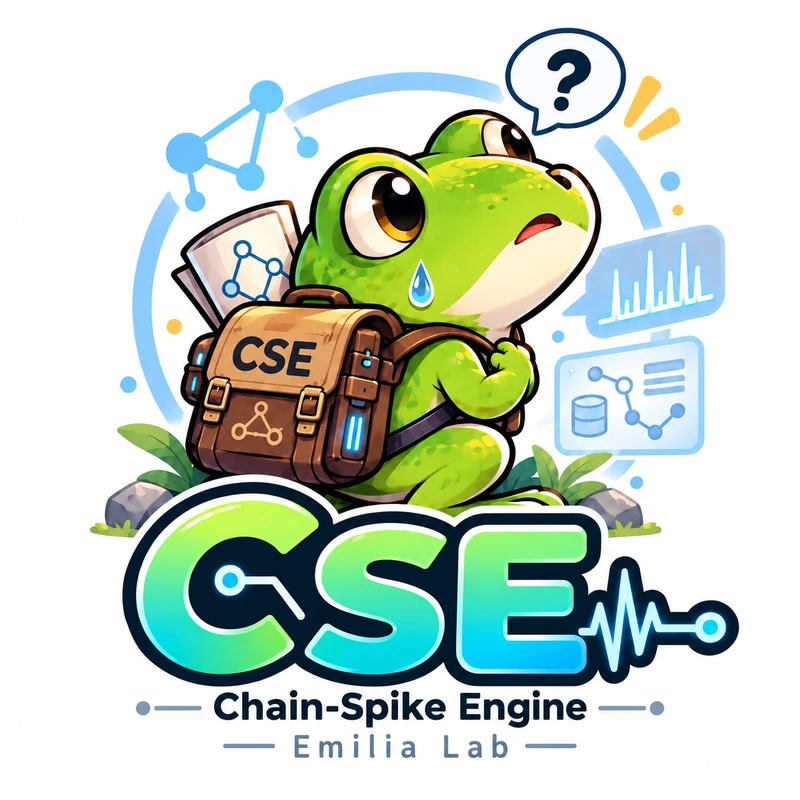
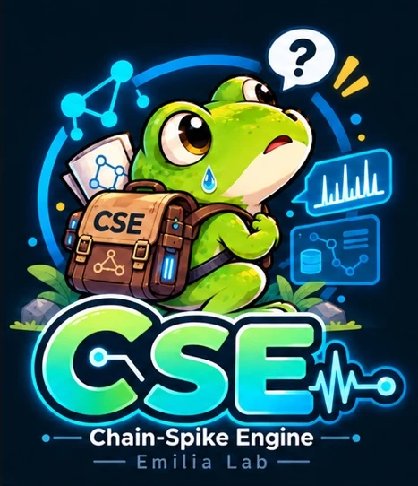
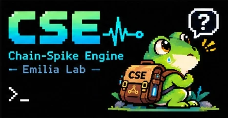

🐸を1匹飼うと、
言語モデルの中身が見える。
順番のあるデータを覚えて「次に何が来そうか」を予測する、学習用の小さなAIです。Pythonの練習や、言語モデルの仕組みを手で触って理解するために作りました。
pip install cse-frog※これはLLMの代わりではありません。中身が全部見えて、壊して学べることが目的です。


MIT License
解剖用の「LMの素体」
理科の授業でカエルを解剖するのは、カエルが一番強いからではなく、体のつくりが一通りそろっていて、しかも見やすいからです。
cse も同じで、言語モデルの基本の流れ（覚える → 点数 → 確率 → 選ぶ）を一通り持った、全部開いて見られる小さな体です。
— README より
- 体のつくりが一通りそろっている覚える・点数をつける・確率にする・選ぶ。大きなLLMと同じ流れを、小さく全部持っています。
- 全部開いて見られる「どこで・なぜその予測をしたか」を、候補ごとの点数の内訳として数字で見られます。
- わざと外してある部品があるアテンションや勾配降下は持っていません。それは「次に自分で組む部品」です。
- 何度解剖しても大丈夫壊れても
Frog()でもう1匹出てきます。
解剖図 — LMの臓器と、🐸の臓器
右の列の「本物の臓器」が何のためにあるのかを、まん中の小さな体で先に触って理解できます。
Frog なら1要素＝1記号）たとえば 🐸 の文脈は直前2つまでしか見えません。だから大きな LLM は、遠くを見るためにアテンションを持っています。
立ち位置：数え上げ（n-gram）より動く部分が多く（発火・伝播・減衰・不応期）、LLM より中身が見える。
予測の「内訳」が全部見える
「どこで・なぜその予測をしたか」を数字で見られます(大きなLLMでは通常、この粒度で直接追うのは難しいところです)。下は「右右下」を5回くり返して覚えさせた 🐸 に、「右右下」の次を聞いた結果です（本物の出力）。
- 覚える並びを見せると、続いて出た記号どうしの結びつきが強くなる
- 点数直接のつながり＋履歴＋直前2つの並び＋文脈の痕跡
- 確率上位の候補の点数を softmax / linear で確率に変える
- 選ぶどう選ぶかは、あなたが作る部品
Frog() — 素直な設定
Frog(refractory_steps=2) — 不応期あり
いじる設定 ↔ LLM で似ているもの
Frog(設定名=値) で変えて、frog.show(...) で点数と確率の変化を見てみてください。あくまで「似た働き」です。違いも含めて比べるのがおすすめです。
下げると自信満々、上げると迷いがち。
確率にする候補を上位 k 個に絞る。活性を広げるときも、各記号から強い順に k 本のつながりだけを使う。
同じ記号を続けて出さなくなる。点数を下げるのではなく完全に禁止するので、ペナルティより極端。
🐸 は直前2つまで。0 にすると「右右 → 下」が覚えられない。
覚えられる記号の数。メモリは max_nodes の2乗で増える。
少し前に出た記号が出やすくなる。研究では、生成を崩す方向に効いていた。
5行で1匹
pip install cse-frog- 使うときの名前は
from cse import Frogです。 learn()には、文字列"右右下"（1文字＝1記号）、リスト["正常", "温度上昇", "停止"]（1要素＝1記号）、リストのリストを渡せます。predict()が<END>を返したら「ここで系列が終わりそう」という意味です。- 保存したファイルは JSON と数値の配列だけ。pickle は使わないので、人の 🐸 を読み込んでも安全です。
from cse import Frog
frog = Frog() # 🐸 を1匹つくる
frog.learn([["右", "右", "下"]] * 10) # 行動の系列を覚えさせる
print(frog.predict(["右", "右"])) # -> 下
print(frog.top(["右"], k=2)) # 確率の高い順に2つ
frog.show(["右", "右", "下"]) # 点数の内訳を表で見る
frog.save("my_frog.cse") # 覚えたことを保存正直な限界
予測の精度では数え上げに負けることもあります。それも含めて全部見せるのが、この 🐸 の役目です。
- 局所的な予測器です。既定の設定では、基本的に「今の記号」と「直前2つの並び」から次を予測します。n-gram（数え上げ）に近い性質です。
- 研究（Chain-Spike Engine の検証）では、古典的な評価軸（精度・メモリ・速度・較正など）で、n-gram などの既存手法に対する比較優位は見つかりませんでした。遠くの文脈を使う問題（検索など）は苦手です。
- エンジンは本来文字単位です。
Frogは単語などの記号を内部で1文字に置き換えて、この制約を吸収しています。 - 既定の設定は、素直に予測するための設定です。
Frog(refractory_steps=2)のように変えると、元の仕組み（不応期）の挙動を観察できます。
ノートブックで遊ぶ
Google Colab でそのまま開けます。
